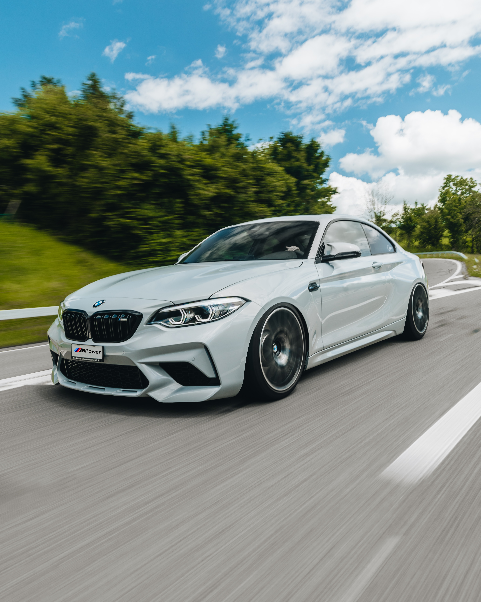
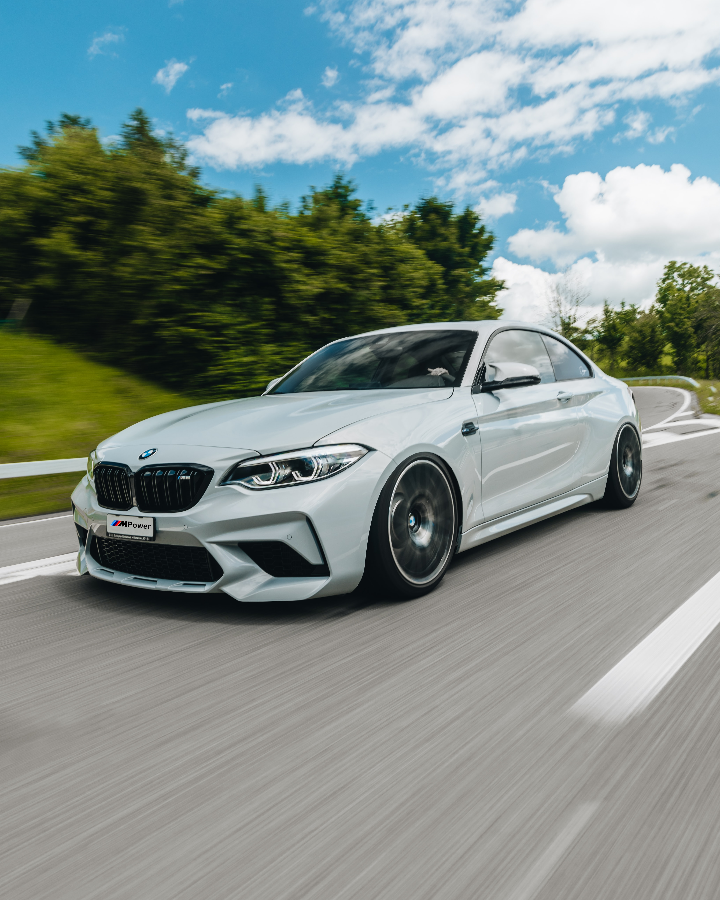

O NOWYM BMW iX.
Ponad 600 km zasięgu *
Elektryczny naped na wszystkie koła z dwiema osiami napędzanymi elektrycznie i ponad 500 KM (370 kW) *
Od 0 do 100 km / h w mniej niż 5 sekund *
Ładowanie 120 km w 10 minut*
Publiczne szybkie ładowanie od 10 do 80% w mniej niż 40 minut
AERODYNAMIKA
BMW iX.
BMW iX w każdym milimetrze swojej dynamicznej stylistyki wdraża zasadę „forma podąża za funkcją".
Widać to przede wszystkim po gładkiej karoserii ze zwężoną nadbudową kabiny i zredukowanymi fugami oraz po płaskim podwoziu. W połączeniu z zamkniętym przodem oraz dyfuzorem z i niezwykłymi detalami, takimi jak wpuszczone klamki czy zintegrowane z listwami szybowymi lusterka zewnętrzne, BMW iX osiąga doskonały współczynnik Cx wynoszący zaledwie 0,25. Dzięki temu łączy w sobie zasieg i wydajność z innowacyjną konstrukcją SAV-a.